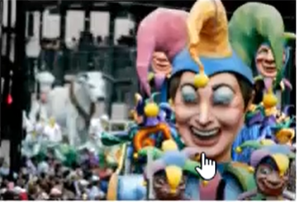
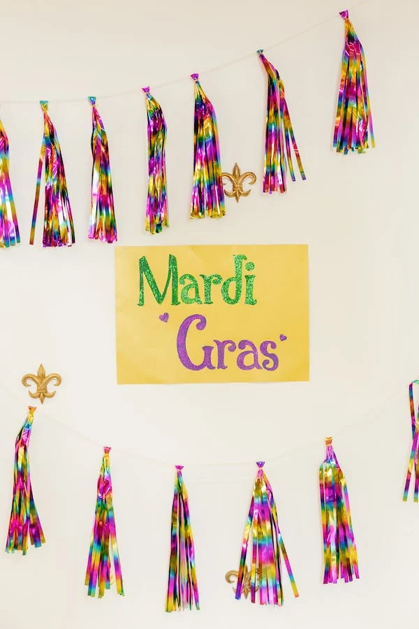

The First Mardi Gras
The first Mardi Gras took place on march 3,1699,when French explorers
Pierre Le Moyne d'lberville and Sieur de Bienville
landed near present-day
New Orleans ,Louisiana They held a small celebration and dubbed their landing spot Point du
Mardi Gras..
in the decaded that followed ,New orleans and other French settlements began marking the holiday
with street parties
,masked balls and lavish dinners ,When the Spanish took control of New Orleans ,however ,they
abolished these rowday
rituals ,and the bans remained in force until Louisiana became a U.S. state in 1812.
On Mardi Gras in 1827, a group of students donned colorful costumes and danced through the
streets of New Orleans
,emulating the revelry they'd observed while visiting Paris , Ten years later ,the first
recorded New Orleans Gras
parade took place , a tradition that continues to this day.
In 1857, a secret society of New Orleans businessmen called the Mistick Krewe of Comus organized
a torch-lit Mardi Gras
procession with marching bands and rolling floats ,setting the tone for future public
celebrations in the city.

The Traditions
Mardi Gras is so much more special when you understand what you're
celebrating and what each tradition means to the
generations of parade-goers who have stood on parade toutes before you. There is a story and a
purpose behind everything
you'll experience during Carenival Time - from the king cake you'll eat to the flambeaux who
light the parades at night.
who organizedMardi Gras?
Krewes are private, non-profit organizations whose members get together year-round to plan their
parade's theme,
costumes and throws, according to Mardi Gras New Orleans, They are individually funded by
members through dues,sales of
krewe-related merchandise and fundraising, including corporate sponsorships. The city of New
Orleans is not involved in
coordinating Mardi Gras parades its only involvement is to issue parde permits.
What is Mardi Gras?
Mardi Gras is a tradition that dates back thousands of years to pagan celebrations of spring and
fertility , including
the raucous Roman festivals of Saturnalia and Lupercalia.
By the late 1930s, New Orleans had street parades of nails with carriages and horse riders to
celebrate Mardi Gras.
Dazzling gas torches, or "flambs", lit the way for the krava members and gave every event an
exciting atmosphere of
romance and festivity. In 1856, six mobile Native youths formed the Mystic Krewe of Comus, inviting
John Milton's hero
Comus to represent their organization. Comos brought magic and mystery to New Orleans with dazzling
floats (known as
tableau cars) and masked balls. Krewe members remain anonymous.
In 1870, the second Krewe of Mardi Gras, the Twelfth Night Celebrants, was formed. This is also the
first recorded
account of Mardi Gras "shots".
When is Mardi Gras?
Mardi Gras is traditionally celebrated on "Fat Tuesday", the Tuesday before Ash Wednesday and the
start of Lent. In many
areas, however, Mardi Gras has evolved into a week-long festival

As Mayor of the great City of New Orleans,I invite you to visit our city to experience the
excitement of Mardi Gras!
The Carnival season officialy begins each year on Jan.6 - Twelfth Night or King'DayTraditional balls
are held in the
weeks leading up to the big event
The culmination of Mardi Gras in New Orleans begin early on Mardi Gras Day when the Zulu Social Aid
& Pleasure Club and
and the rex Organization parade through the city Music ,food and elaborate costumes add to the fun
day of excitement for
revelers of all ages...